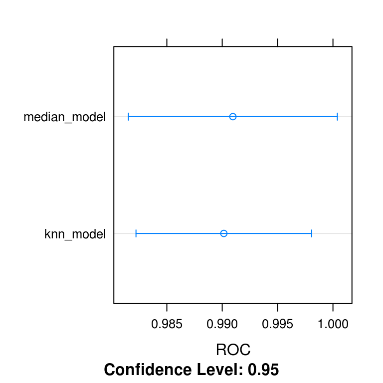
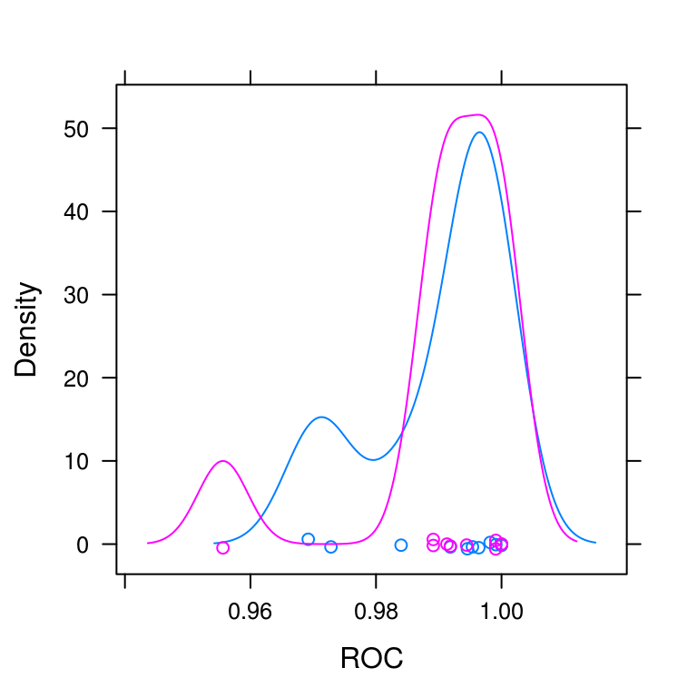
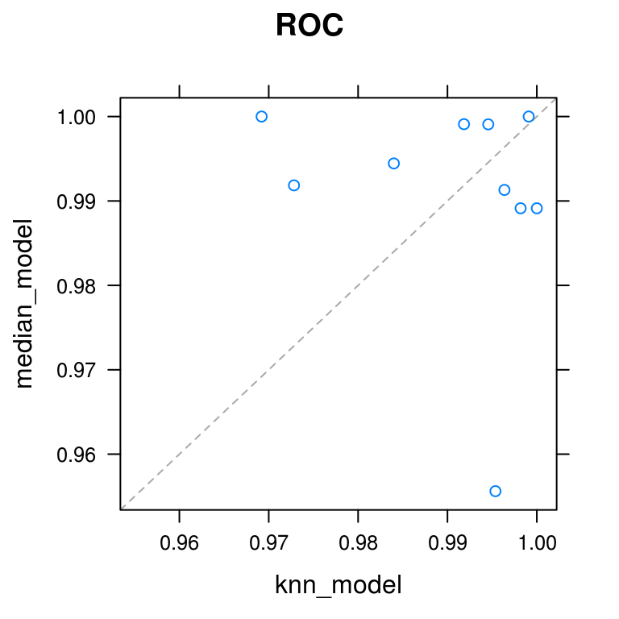
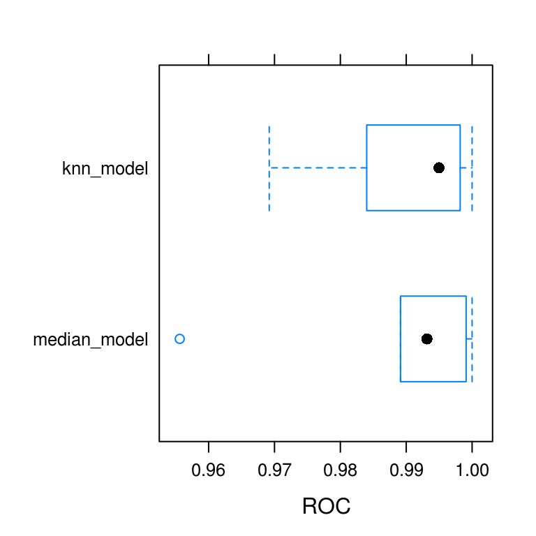

Chapter 5 Preprocessing your data
In this chapter, you will practice using train() to preprocess data before fitting models, improving your ability to making accurate predictions.
Median imputation video
Median imputation vs. omitting rows
What’s the value of median imputation?
It removes some variance from your data, making it easier to model.
It lets you model data with missing values.
It’s useless; you should just throw out rows of data with any missings.
5.1 Apply median imputation
In this chapter, you’ll be using a version of the Wisconsin Breast Cancer dataset. This dataset presents a classic binary classification problem: 50% of the samples are benign, 50% are malignant, and the challenge is to identify which are which.
This dataset is interesting because many of the predictors contain missing values and most rows of the dataset have at least one missing value. This presents a modeling challenge, because most machine learning algorithms cannot handle missing values out of the box. For example, your first instinct might be to fit a logistic regression model to this data, but prior to doing this you need a strategy for handling the NAs.
Fortunately, the train() function in caret contains an argument called preProcess, which allows you to specify that median imputation should be used to fill in the missing values. In previous chapters, you created models with the train() function using formulas such as y ~ .. An alternative way is to specify the x and y arguments to train(), where x is an object with samples in rows and features in columns and y is a numeric or factor vector containing the outcomes. Said differently, x is a matrix or data frame that contains the whole dataset you’d use for the data argument to the lm() call, for example, but excludes the response variable column; y is a vector that contains just the response variable column.
For this exercise, the argument x to train() is loaded in your workspace as breast_cancer_x and y as breast_cancer_y.
url <- "https://assets.datacamp.com/production/course_1048/datasets/BreastCancer.RData"
download.file(url, "./Data/BreastCancer.RData")
load("./Data/BreastCancer.RData")Exercise
- Use the
train()function to fit a glm model calledmodelto the breast cancer dataset. UsepreProcess = "medianImpute"to handle the missing values.
library(caret)
# Create custom trainControl: myControl
myControl <- trainControl(
method = "cv",
number = 10,
summaryFunction = twoClassSummary,
classProbs = TRUE, # IMPORTANT!
verboseIter = FALSE
)
# Apply median imputation: model
model <- train(
x = breast_cancer_x, y = breast_cancer_y,
method = "glm",
trControl = myControl,
preProcess = "medianImpute"
)Warning in train.default(x = breast_cancer_x, y = breast_cancer_y, method =
"glm", : The metric "Accuracy" was not in the result set. ROC will be used
instead.- Print the model to the console.
# Print model to console
modelGeneralized Linear Model
699 samples
9 predictor
2 classes: 'benign', 'malignant'
Pre-processing: median imputation (9)
Resampling: Cross-Validated (10 fold)
Summary of sample sizes: 629, 630, 629, 629, 629, 628, ...
Resampling results:
ROC Sens Spec
0.9909642 0.9694686 0.9378333Comparing KNN imputation to median imputation
Will KNN imputation always be better than median imputation?
No, you should try both options and keep the one that gives more accurate models.
Yes, KNN is a more complicated model than medians, so it’s always better.
No, medians are more statistically valid than KNN and should always be used.
5.2 Use KNN imputation
In the previous exercise, you used median imputation to fill in missing values in the breast cancer dataset, but that is not the only possible method for dealing with missing data.
An alternative to median imputation is \(k\)-nearest neighbors, or KNN, imputation. This is a more advanced form of imputation where missing values are replaced with values from other rows that are similar to the current row. While this is a lot more complicated to implement in practice than simple median imputation, it is very easy to explore in caret using the preProcess argument to train(). You can simply use preProcess = "knnImpute" to change the method of imputation used prior to model fitting.
Exercise
breast_cancer_x and breast_cancer_y are loaded in your workspace.
Use the
train()function to fit a glm model calledmodel2to the breast cancer dataset.Use KNN imputation to handle missing values.
# Apply KNN imputation: model2
model2 <- train(
x = breast_cancer_x, y = breast_cancer_y,
method = "glm",
trControl = myControl,
preProcess = "knnImpute"
)Warning in train.default(x = breast_cancer_x, y = breast_cancer_y, method =
"glm", : The metric "Accuracy" was not in the result set. ROC will be used
instead.# Print model to console
model2Generalized Linear Model
699 samples
9 predictor
2 classes: 'benign', 'malignant'
Pre-processing: nearest neighbor imputation (9), centered (9), scaled (9)
Resampling: Cross-Validated (10 fold)
Summary of sample sizes: 630, 629, 629, 629, 629, 629, ...
Resampling results:
ROC Sens Spec
0.9901472 0.9715942 0.942Compare KNN and median imputation
All of the preprocessing steps in the train() function happen in the training set of each cross-validation fold, so the error metrics reported include the effects of the preprocessing.
This includes the imputation method used (e.g. knnImpute or medianImpute). This is useful because it allows you to compare different methods of imputation and choose the one that performs the best out-of-sample.
median_model and knn_model are available in your workspace, as is ANS, which contains the resampled results of both models. Look at the results of the models by calling
dotplot(ANS, metric = "ROC")and choose the one that performs the best out-of-sample. Which method of imputation yields the highest out-of-sample ROC score for your glm model?
set.seed(9)
median_model <- model
knn_model <- model2
ANS <- resamples(list(median_model = median_model, knn_model = knn_model))
summary(ANS)
Call:
summary.resamples(object = ANS)
Models: median_model, knn_model
Number of resamples: 10
ROC
Min. 1st Qu. Median Mean 3rd Qu. Max. NA's
median_model 0.9556159 0.9896739 0.9931461 0.9909642 0.9990892 1 0
knn_model 0.9692029 0.9859620 0.9949678 0.9901472 0.9977355 1 0
Sens
Min. 1st Qu. Median Mean 3rd Qu. Max. NA's
median_model 0.9130435 0.9557971 0.9673913 0.9694686 1.0000000 1 0
knn_model 0.9130435 0.9778986 0.9782609 0.9715942 0.9782609 1 0
Spec
Min. 1st Qu. Median Mean 3rd Qu. Max. NA's
median_model 0.8750000 0.9166667 0.9183333 0.9378333 0.9895833 1 0
knn_model 0.9166667 0.9166667 0.9183333 0.9420000 0.9583333 1 0dotplot(ANS, metric = "ROC")
densityplot(ANS, metric = "ROC")
xyplot(ANS, metric = "ROC")
bwplot(ANS, metric = "ROC")
KNN imputation is much better than median imputation.
KNN imputation is slightly better than median imputation.
Median imputation is much better than KNN imputation.
Median imputation is slightly better than KNN imputation.
Multiple preprocessing methods
Order of operations
Which comes first in caret’s preProcess() function: median imputation or centering and scaling of variables?
Median imputation comes before centering and scaling.
Centering and scaling come before median imputation.
Note: Centering and scaling require data with no missing values.
5.3 Combining preprocessing methods
The preProcess argument to train() doesn’t just limit you to imputing missing values. It also includes a wide variety of other preProcess techniques to make your life as a data scientist much easier. You can read a full list of them by typing ?preProcess and reading the help page for this function.
One set of preprocessing functions that is particularly useful for fitting regression models is standardization: centering and scaling. You first center by subtracting the mean of each column from each value in that column, then you scale by dividing by the standard deviation.
Standardization transforms your data such that for each column, the mean is 0 and the standard deviation is 1. This makes it easier for regression models to find a good solution.
Exercise
breast_cancer_x and breast_cancer_y are loaded in your workspace. Fit two models called model1 and model2 to the breast cancer data, then print each to the console:
- A logistic regression model using only median imputation:
model1
# Fit glm with median imputation: model1
model1 <- train(
x = breast_cancer_x, y = breast_cancer_y,
method = "glm",
trControl = myControl,
preProcess = "medianImpute"
)Warning in train.default(x = breast_cancer_x, y = breast_cancer_y, method =
"glm", : The metric "Accuracy" was not in the result set. ROC will be used
instead.# Print model1
model1Generalized Linear Model
699 samples
9 predictor
2 classes: 'benign', 'malignant'
Pre-processing: median imputation (9)
Resampling: Cross-Validated (10 fold)
Summary of sample sizes: 630, 629, 628, 629, 629, 629, ...
Resampling results:
ROC Sens Spec
0.9921602 0.9694203 0.9418333- A logistic regression model using median imputation, centering, and scaling (in that order):
model2
# Fit glm with median imputation and standardization: model2
model2 <- train(
x = breast_cancer_x, y = breast_cancer_y,
method = "glm",
trControl = myControl,
preProcess = c("medianImpute", "center", "scale")
)Warning in train.default(x = breast_cancer_x, y = breast_cancer_y, method =
"glm", : The metric "Accuracy" was not in the result set. ROC will be used
instead.# Print model2
model2Generalized Linear Model
699 samples
9 predictor
2 classes: 'benign', 'malignant'
Pre-processing: median imputation (9), centered (9), scaled (9)
Resampling: Cross-Validated (10 fold)
Summary of sample sizes: 629, 629, 629, 629, 628, 630, ...
Resampling results:
ROC Sens Spec
0.9913116 0.9650242 0.9461667Handling low information predictors video
Why remove near zero variance predictors?
What’s the best reason to remove near zero variance predictors from your data before building a model?
Because they are guaranteed to have no effect on your model.
Because their p-values in a linear regression will always be low.
To reduce model-fitting time without reducing model accuracy.
Note: Low variance variables are unlikely to have a large impact on our models.
5.4 Remove near zero variance predictors
As you saw in the video, for the next set of exercises, you’ll be using the blood-brain dataset. This is a biochemical dataset in which the task is to predict the following value for a set of biochemical compounds:
log((concentration of compound in brain) /
(concentration of compound in blood))This gives a quantitative metric of the compound’s ability to cross the blood-brain barrier, and is useful for understanding the biological properties of that barrier.
One interesting aspect of this dataset is that it contains many variables and many of these variables have extremely low variances. This means that there is very little information in these variables because they mostly consist of a single value (e.g. zero).
Fortunately, caret contains a utility function called nearZeroVar() for removing such variables to save time during modeling.
nearZeroVar() takes in data x, then looks at the ratio of the most common value to the second most common value, freqCut, and the percentage of distinct values out of the number of total samples, uniqueCut. By default, caret uses freqCut = 19 and uniqueCut = 10, which is fairly conservative. I like to be a little more aggressive and use freqCut = 2 and uniqueCut = 20 when calling nearZeroVar().
Exercise
bloodbrain_x and bloodbrain_y are loaded in your workspace.
url <- "https://assets.datacamp.com/production/course_1048/datasets/BloodBrain.RData"
download.file(url, "./Data/BloodBrain.RData")
load("./Data/BloodBrain.RData")- Identify the near zero variance predictors by running
nearZeroVar()on the blood-brain dataset. Store the result as an object calledremove_cols. UsefreqCut = 2anduniqueCut = 20in the call tonearZeroVar().
# Identify near zero variance predictors: remove
remove_cols <- nearZeroVar(bloodbrain_x, names = TRUE, freqCut = 2, uniqueCut = 20)- Use
names()to create a vector containing all column names ofbloodbrain_x. Call thisall_cols.
all_cols <- names(bloodbrain_x)- Make a new data frame called
bloodbrain_x_smallwith the near-zero variance variables removed. Usesetdiff()to isolate the column names that you wish to keep (i.e. that you don’t want to remove.)
# Remove from data: bloodbrain_x_small
bloodbrain_x_small <- bloodbrain_x[ , setdiff(all_cols, remove_cols)]5.4.1 preProcess() and nearZeroVar()
Can you use the preProcess argument in caret to remove near-zero variance predictors? Or do you have to do this by hand, prior to modeling, using the nearZeroVar() function?
Yes! Set the
preProcessargument equal to"nzv".No, unfortunately. You have to do this by hand.
5.5 Fit model on reduced blood-brain data
Now that you’ve reduced your dataset, you can fit a glm model to it using the train() function. This model will run faster than using the full dataset and will yield very similar predictive accuracy.
Furthermore, zero variance variables can cause problems with cross-validation (e.g. if one fold ends up with only a single unique value for that variable), so removing them prior to modeling means you are less likely to get errors during the fitting process.
Exercise
bloodbrain_x, bloodbrain_y, remove_cols, and bloodbrain_x_small are loaded in your workspace.
- Fit a glm model using the
train()function and the reduced blood-brain dataset you created in the previous exercise.
# Fit model on reduced data: model
model <- train(x = bloodbrain_x_small, y = bloodbrain_y, method = "glm")- Print the result to the console.
# Print model to console
modelGeneralized Linear Model
208 samples
112 predictors
No pre-processing
Resampling: Bootstrapped (25 reps)
Summary of sample sizes: 208, 208, 208, 208, 208, 208, ...
Resampling results:
RMSE Rsquared MAE
1.798777 0.1069717 1.1553155.6 Using PCA as an alternative to nearZeroVar()
An alternative to removing low-variance predictors is to run PCA on your dataset. This is sometimes preferable because it does not throw out all of your data: many different low variance predictors may end up combined into one high variance PCA variable, which might have a positive impact on your model’s accuracy.
This is an especially good trick for linear models: the pca option in the preProcess argument will center and scale your data, combine low variance variables, and ensure that all of your predictors are orthogonal. This creates an ideal dataset for linear regression modeling, and can often improve the accuracy of your models.
Exercise
bloodbrain_x and bloodbrain_y are loaded in your workspace.
- Fit a
glmmodel to the full blood-brain dataset using the"pca"option topreProcess.
# Fit glm model using PCA: model
model <- train(
x = bloodbrain_x, y = bloodbrain_y,
method = "glm", preProcess = "pca"
)- Print the model to the console and inspect the result.
# Print model to console
modelGeneralized Linear Model
208 samples
132 predictors
Pre-processing: principal component signal extraction (132), centered
(132), scaled (132)
Resampling: Bootstrapped (25 reps)
Summary of sample sizes: 208, 208, 208, 208, 208, 208, ...
Resampling results:
RMSE Rsquared MAE
0.6200783 0.4215242 0.4663907Note that the PCA model’s accuracy is slightly higher than the nearZeroVar() model from the previous exercise. PCA is generally a better method for handling low-information predictors than throwing them out entirely.